Plot Types# Here is a collection of the plot types that are currently available using EMCPy. Basic# 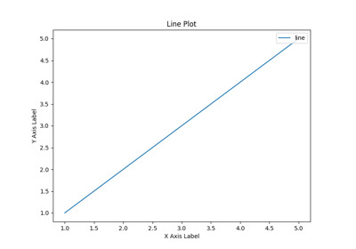 Line Plot Line Plot 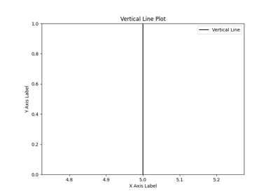 Vertical Line Plot Vertical Line Plot 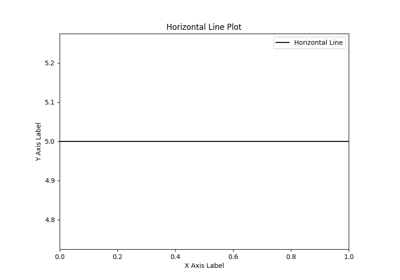 Horizontal Line Plot Horizontal Line Plot 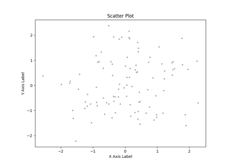 Scatter Plot Scatter Plot 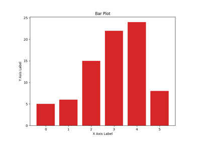 Bar Plot Bar Plot 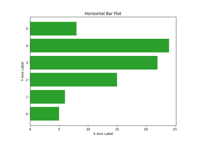 Horizontal Bar Plot Horizontal Bar Plot Statistical distributions# 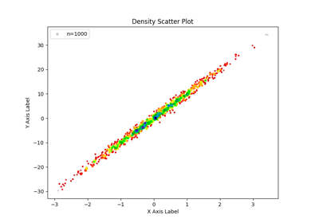 Density Scatter Plot Density Scatter Plot 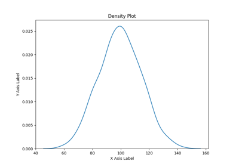 Density Density 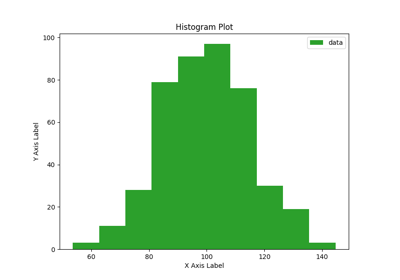 Histogram Histogram 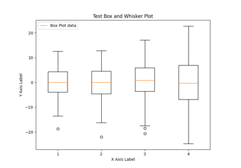 Box Plot Box Plot Gridded# 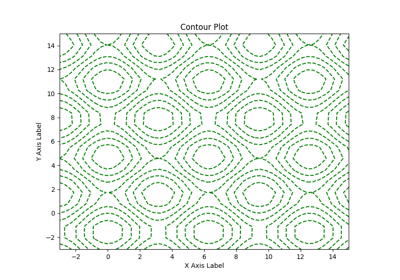 Contour Contour 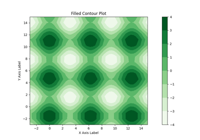 Filled Contour Filled Contour 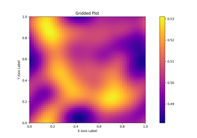 Gridded Gridded Map Plots# 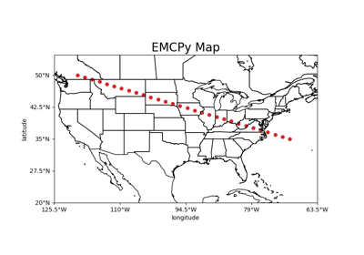 2D Scatter Map Plot 2D Scatter Map Plot 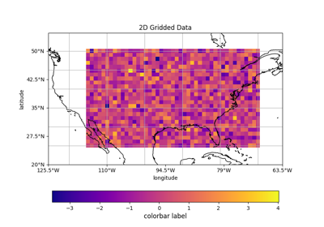 Gridded Map Plot Gridded Map Plot 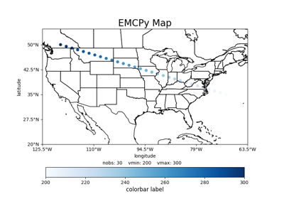 Scatter Map Plot Scatter Map Plot Gallery generated by Sphinx-Gallery